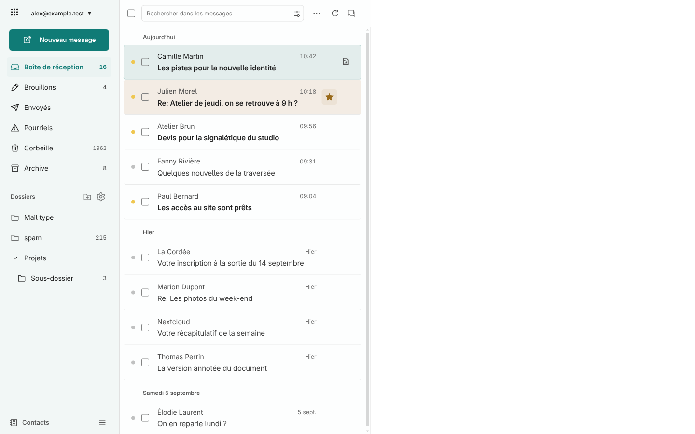
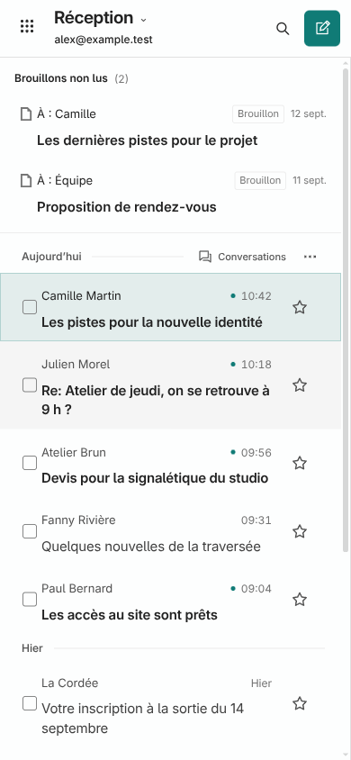

Le point jaune ou gris à gauche change l’état lu, sans ouvrir le message. L’étoile non activée se révèle au survol ou au focus. Les pièces jointes occupent une colonne fixe à droite.

Desktop à 1440 px, messages fictifs.

Mobile à 390 px : capture identique au pixel près à la version 1.7.13.